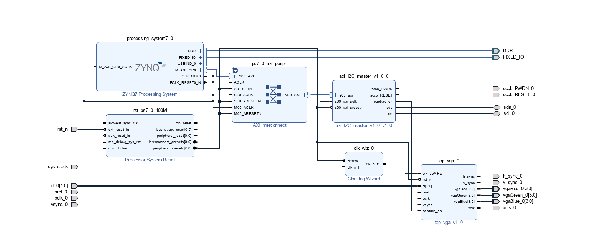
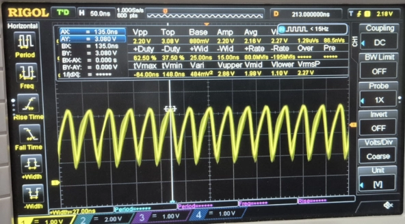
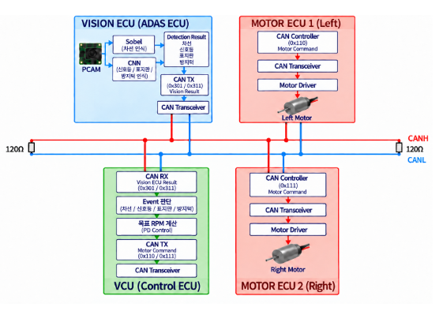
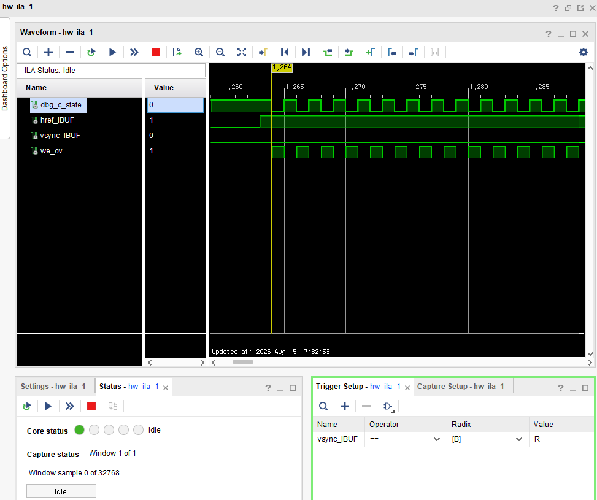
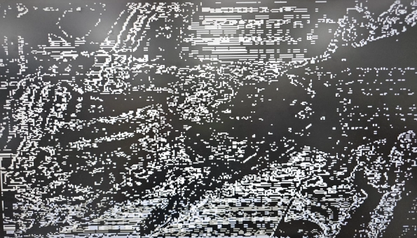
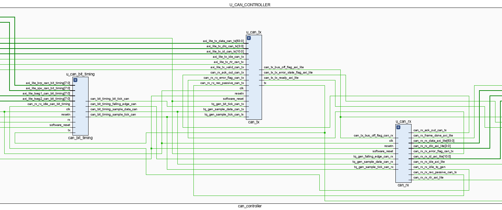
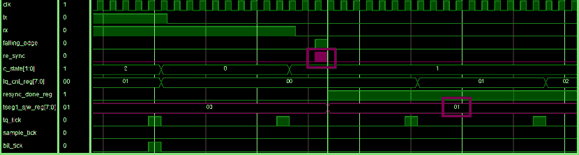
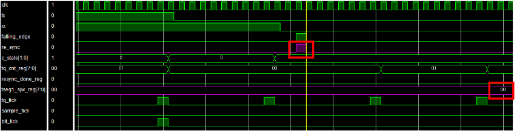

Requirement
IC Spec, Pin Map, Signal Allocation과 Power Requirement 확인
BOARD-LEVEL HARDWARE ENGINEERING
반도체 검사장비용 Load Board를 설계하며 IC Spec과 Pin Map부터 고속 Signal, Power/GND, 다층 PCB, 제작 데이터까지 검토했습니다. 이후 FPGA·MCU 교육 프로젝트로 Sensor 입력과 Logic, ECU 제어까지 H/W의 동작 범위를 넓혔습니다.
고객사 IC의 요구 사양을 회로·PCB 설계 조건으로 바꾸고, 제작 및 변경 대응까지 수행한 실무 경험입니다.
이 영역은 ㈜티에스이의 실제 H/W 설계 업무입니다. 아래 교육 프로젝트와 구분해 기재했습니다.
2023.09 — 2026.02 · 2년 5개월
Device Specification을 해석하고, 검사장비와 DUT 사이에 필요한 Signal 및 Power 경로를 다층 PCB에 구현했습니다.
IC Spec, Pin Map, Signal Allocation과 Power Requirement 확인
OrCAD 회로·전원 Net·Component·Decoupling 구성 검토
Layer Structure, Target Impedance 및 고속 신호 배선 조건 설정
Placement, High-speed Routing, Return Path, Crosstalk 검토
DUT 중심 Power Loop, Power/GND, Capacitor 및 PDN 검토
DRC · Gerber · BOM 검증, 제작 발주 및 Revision 대응
단순히 결과 수치를 나열하지 않고, 어떤 조건을 점검하고 무엇을 변경했는지 정리했습니다.
고객사 회로도·PCB Layout 원본은 보안상 공개하지 않습니다. 검토 기준과 정량 결과만 제시합니다.
Power/GND 구조와 Decoupling 배치를 조정한 전원 품질 개선 사례
전원 Noise를 부품 사양만의 문제로 보지 않고, DUT–Decoupling Capacitor–GND를 따라 흐르는 실제 Power Loop의 길이와 경로를 다시 검토했습니다.
DUT 공급 전원의 안정성이 IC 동작 조건에 미치는 영향을 점검했습니다.
Capacitor 위치, Power/GND 경로와 Decoupling 연결을 함께 살폈습니다.
DUT 중심의 Power Loop를 줄이고 Capacitor 및 관련 Layout을 조정했습니다.
원본 수치: 해당 Load Board 설계 검토 기록의 전원 Noise 약 30% 감소.
Reference Plane과 인접 Signal Coupling을 함께 검토한 SI 개선 사례
고속 신호의 Noise를 단순 배선 간격 문제로 한정하지 않고 Return Current가 지나가는 Reference Plane과 인접 배선의 Coupling을 함께 분석했습니다.
고속 Channel의 신호 품질과 인접 Signal 간섭 가능성을 검토했습니다.
Layer 구조, Reference Plane, GND 경로와 Routing 조건을 재확인했습니다.
Routing 및 Shielding GND Via와 Return Path를 보완했습니다.
추가 설계 사례: Clock Edge에서 Ringing·Overshoot를 줄이기 위해 Source 측 Series Resistance와 Rise/Fall 조건을 검토했습니다.
Pin Map Version 및 변경 이력 관리로 후속 Design Review 시간 단축
IC Spec이나 부품·Footprint가 바뀌는 상황에서 전체 PCB를 처음부터 다시 검토하지 않도록 변경된 조건과 영향을 받는 설계 영역을 구분했습니다.
변경된 Pin·Component·Mechanical 조건의 영향 범위를 확인해야 했습니다.
Pin List, Pin Map Version, 이전 설계 파일과 변경 이력을 대조했습니다.
영향 부위만 우선 확인해 재작업과 Review 범위를 축소했습니다.
설계 검토와 제작 대응 과정에서 개발 일정을 약 2일 단축한 사례도 기록했습니다.
실무 H/W 설계 경험과 별개로, FPGA·센서·차량 ECU 시스템을 직접 구현하고 측정·검증한 기록입니다. 담당 모듈과 팀 전체 구현을 구분했습니다.

Camera 입력 신호와 FPGA의 실제 저장·출력 Timing을 연결했습니다. 영상이 깨지거나 출력되지 않을 때 알고리즘보다 PCLK·HREF·VSYNC·BRAM Write·Read Latency부터 점검했습니다.

영상 인식 결과를 별도 제어 보드로 전달하는 시스템에서 Red Detect ISP와 AXI4-Lite UART Interface를 구현했습니다. Camera 입력 Noise가 영상 Edge로 전파되는 현상도 함께 확인했습니다.

Vision ECU가 인식 결과를 전송하고, Basys 3 VCU가 중앙에서 상태·우선순위·주행 명령을 판단한 뒤 STM32 Motor1·2 ECU로 명령을 내리는 구조입니다.

MicroBlaze SoC에서 Custom SPI Master/Slave 및 AXI4-Lite Register Interface를 연동했습니다. Firmware로 Register를 제어한 뒤 FPGA 보드 간 실제 전송 결과를 확인했습니다.
교육 프로젝트에서 직접 구성한 H/W Interface, Logic 및 실보드 결과를 회로·PCB 엔지니어 관점으로 정리했습니다. 아래 이미지는 원본 프로젝트에서 추출한 설계 자료와 검증 화면입니다.
TRAINING EVIDENCE / 기업 실무는 상단 Load Board 사례로 구분합니다.
카메라의 물리적인 입력 신호와 FPGA 내부 Data Path를 연결했습니다.
주요 구현 내용 PCLK·HREF·VSYNC를 이용한 8bit × 2Byte RGB565 Pixel Capture, BRAM 주소 계산, 640×480 VGA의 2배 Mapping 및 1-Clock Read Latency에 맞춘 DE·HSYNC·VSYNC 정렬입니다.
검증과 원인 추적 흰 화면·영상 Noise 발생 시 BRAM Write Enable과 동기신호를 ILA로 확인해 Camera Capture와 VGA Output 중 문제 위치를 구분했습니다.

입력 신호 품질이 최종 영상 인식 결과에 미치는 영향을 확인했습니다.
주요 구현 내용 Red Filter → Gaussian → ROI → Decoder → AXI4-Lite UART 0xFF STOP으로 이어지는 영상 검출·제어 경로를 구현했습니다.
문제 해결 OV7670 영상에 나타난 Noise가 Sobel/ROI 결과에도 반영되는 현상을 확인하고, Camera 전원 Decoupling 0.1 µF과 XCLK Source Series Resistance 22 Ω 등 H/W 조건을 함께 검토했습니다. Red 검출 후 WAIT_UNRED State로 연속 정지 명령 문제를 개선했습니다.

ADAS 시스템 전체 흐름에서 CAN Bit Timing과 중앙 제어 경로를 검증했습니다.
시스템 구성 Vision ECU(Zynq Z7-20)가 영상 인식 결과를 CAN으로 전송합니다. Basys 3 VCU(MicroBlaze)가 Event 우선순위·주행 상태·속도·정지·회전 명령을 중앙에서 판단하고 STM32 Motor1·2 ECU에 CAN Motor Command를 전달합니다.
주요 구현 내용 CAN RX RTL(2-FF Sync → Bit Timing → Destuff → Frame FSM → CRC-15)과 Basys 3 VCU의 CAN HAL·Driver·Application입니다. 차량 전체 시연과 본인 구현 모듈은 구분합니다.
RX/TX가 다른 Tick 기준을 쓰면 Hard Sync·Resync와 Sample Point가 어긋날 수 있어 공용 Timing 기준으로 정리했습니다.
자신이 송신한 Dominant Edge를 Resync 대상으로 오인하는 별도 오류를 수정해 Bit Time 2.125 µs → 2.000 µs로 복원했습니다.



RTL 내부 Register 동작을 실제 FPGA 인터페이스에서 확인했습니다.
주요 구현 내용 Custom AXI4-Lite SPI Master/Slave IP의 SR·TDR·RDR·CR Register Map과 GPIO·Timer·UART 등 주변장치 연결, Vitis C Register 제어를 구성했습니다.
실물 디버깅 SPI Slave RAM Read에서 수신 중인 값을 주소로 참조하던 버그를 저장된 Address를 참조하도록 수정했습니다. 두 Basys 3 보드의 SCLK/MOSI/MISO/SS_n을 Logic Analyzer로 측정하고 RAM Read/Write 결과를 확인했습니다.

* 고객사 Load Board 원본 Gerber·회로도와 별개인 교육 프로젝트 원본 자료만 공개했습니다.
업무에서 사용한 설계 역량과 교육 프로젝트로 검증한 RTL·MCU 역량을 혼동하지 않도록 나눴습니다.
㈜티에스이 / Load Board 설계 실무
온디바이스 AI 시스템반도체 설계 / 980시간
2022.02 졸업 · GPA 4.22 / 4.5
경남과학기술대학교 전자공학과 · 3.93 / 4.5
회로·전기 기초 이론을 바탕으로 H/W 설계 실무를 수행했습니다.
신호·전원 품질과 보드 이후의 실제 디지털 동작까지 연결해 이해합니다.
보안 안내 · 근무 중 설계한 고객사 회로도, PCB 원본, 제품 식별 정보는 공개하지 않습니다. 본 페이지는 공개 가능한 업무 범위·개선 내용과 별도 교육 프로젝트 자료로 구성했습니다.
Load Board 설계의 실제 문제 해결 사례와 H/W Interface 프로젝트를 중심으로 기술적 질문에 답할 수 있습니다.